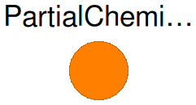
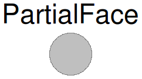

Table of Contents
- User's Guide
- BCs**
- Sensors**
- Assemblies**
- Regions**
- Subregions**
- Connectors
- Characteristics
- Units
- Quantities
- BaseClasses
- **Please check back soon or contact kdavies4 at gmail.com.
Download
- Latest: FCSys-2.0.zip (**Check back soon.)

| Name | Description |
|---|---|
| Partial connector to exchange material while advecting linear momentum and enthalpy | |
| Partial connector to transport material, transverse displacement, and entropy of a single species | |
| ThermoOpt | Thermodynamic options for a face |
type ThermoOpt = enumeration(
ClosedAdiabatic "Closed and adiabatic",
ClosedDiabatic "Closed and diabatic",
OpenDiabatic "Open and diabatic") "Thermodynamic options for a face";
 FCSys.Connectors.BaseClasses.PartialChemical
FCSys.Connectors.BaseClasses.PartialChemical
For more information, see the documentation in the Connectors package.
| Type | Name | Default | Description |
|---|---|---|---|
| Integer | n_vel | 1 | Number of components of velocity (nvel) |
| Type | Name | Description |
|---|---|---|
| Integer | n_vel | Number of components of velocity (nvel) |
| Number | muPerT | Quotient of electrochemical potential and temperature [1] |
| flow Current | Ndot | Current [N/T] |
| Velocity | phi[n_vel] | Velocity [l/T] |
| flow Force | mPhidot[n_vel] | Force due to advection [l.m/T2] |
| Velocity2 | hbar | Massic enthalpy [l2/T2] |
| flow Power | Hdot | Enthalpy flow rate [l2.m/T3] |
partial connector PartialChemical
"Partial connector to exchange material while advecting linear momentum and enthalpy"
parameter Integer n_vel(
final min=0,
final max=3) = 1
"Number of components of velocity (nvel)";
// Material
Q.Number muPerT(nominal=1*U.V)
"Quotient of electrochemical potential and temperature";
flow Q.Current Ndot(nominal=1*U.A) "Current";
// For linear momentum
Q.Velocity phi[n_vel](each nominal=1*U.cm/U.s) "Velocity";
flow Q.Force mPhidot[n_vel](each nominal=1*U.N) "Force due to advection";
// For energy
Q.Velocity2 hbar(nominal=1*U.V) "Massic enthalpy";
flow Q.Power Hdot(nominal=10*U.W) "Enthalpy flow rate";
end PartialChemical;
 FCSys.Connectors.BaseClasses.PartialFace
FCSys.Connectors.BaseClasses.PartialFace
The thermOpt parameter sets the thermodynamic
properties of the face. The face may be closed and adiabatic, closed and diabatic
(i.e., with heat transfer), or open and diabatic. However, the open and adiabatic
combination is not an option. Given the formulation of the
Species model, it would
prevent the energy balance from being computed properly (see the
ThermoOpt enumeration).
For more information, see the documentation in the Connectors package and the Material and Thermal connectors.
| Type | Name | Default | Description |
|---|---|---|---|
| ThermoOpt | thermoOpt | ThermoOpt.ClosedAdiabatic | Options for material and thermal transport |
| Type | Name | Description |
|---|---|---|
| ThermoOpt | thermoOpt | Options for material and thermal transport |
| Material | material | Subconnector for material transport |
| Thermal | thermal | Subconnector for thermal transport |
connector PartialFace "Partial connector to transport material, transverse displacement, and entropy of a single species" parameter ThermoOpt thermoOpt=ThermoOpt.ClosedAdiabatic "Options for material and thermal transport"; FCSys.Connectors.Material material if thermoOpt == ThermoOpt.OpenDiabatic "Subconnector for material transport"; FCSys.Connectors.Thermal thermal if thermoOpt == ThermoOpt.ClosedDiabatic or thermoOpt == ThermoOpt.OpenDiabatic "Subconnector for thermal transport";end PartialFace;